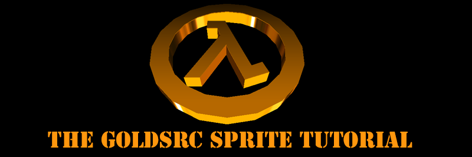
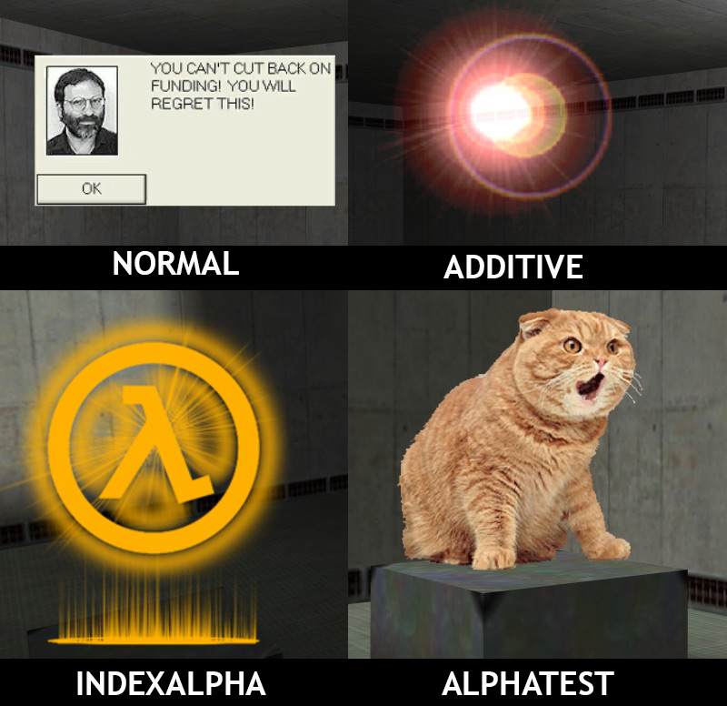
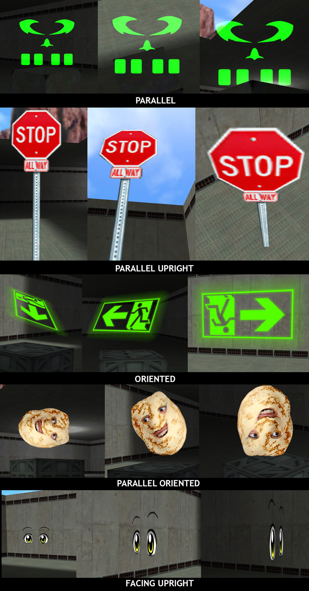

GoldSrc Sprites are point entities that are saved as individual files named with extension ".spr" instead of map textures that are packed into WADs. In order to make sprites, you must author your images in BMP format with an 8-bit depth (256 colors index/palette) and dimensions must be in multiples of 16 with a maximum of 512X512. Sprites have multiple types of transparency and orientation modes to rotate them. They can also be toggled on or off by name and have animation. Lastly, unlike brush entities they are not affected by BSP map lighting.
While this tutorial focuses primarily on map-based entities, the methods for creating other effects or uses are the same, say for example some newly coded effects for a mod or custom weapons, trails, angelscript (Sven Co-op), and HUD/projectiles/muzzle/effect replacements without the framerate limitations of map entities.
Sprites are saved in this directory:
C:\Program Files (x86)\Steam\steamapps\common\Half-Life\valve\sprites
Keep in mind to make your own folder in the sprite directory for organization and avoiding name conflicts.
3) Sprites come in 4 texture formats:
Normal - Image as is
Additive - Additive transparency
Index Alpha - Gradient transparency with 1 color
Alpha Test - Masked 1-bit Transparency
Here we see what these 4 types look like

4)Sprites also have five orientation types:
Parallel - Most common default type; image always faces camera
Parallel Upright - Locked to z-axis so only rotates to face camera (best for things that need to be placed on ground, for example trees or fire effect)
Oriented - Does not rotate to camera; has a fixed orientation defined in hammer (not for use with env_glow)
Parallel Oriented - Faces camera just like Parallel but can be rotated in hammer (not for use with env_glow)
Facing Upright - Lesser used mode that works just like Parallel upright, but rotation aligns with player origin instead of camera. (can be buggy at close distances, would only recommend for a specific effect)
Important: Oriented mode sprites tend to have problems with angle co-ordinates in hammer so its best to set them manually starting from [180,180,180] instead of [0,0,0]. In addition don't use negative numbers; instead subtract from 360. Also use 360 instead of 0 and carefully watch the use of hammer transforms as it will likely give you numbers that might look fine in hammer but will not work in-game. If you are still having troubles with angles not appearing in map I have an example RMF included in the example file download at the bottom (called "oriented_angles.rmf").

If you made a sprite file and need to change the type you set upon creation, you can have their types changed with HL-Texture-Tools under "fix sprite type" without re-creating them. Also in the mod Sven Co-Op" you can actually set a manual override known in the FGD as "Draw type/Orientation" (aka: keyvalue "vp_type").
Sprites can be used by the following hammer entities:
env_glow: Basic, simple to set up sprite. Does not animate, cannot receive inputs and cannot define rotation in oriented formats
env_sprite: Sprite with full features such as turning on and off, animation and orientation settings
env_laser: A beam entity that draws a sprite from itself to a target. The sprite is usually a rectangle ratio sprite format. This entity renders only in additive mode, no matter the sprite format.
env_beam: A beam entity that has more features than env_laser. Unlike env_laser, env_beam is targeted from 2 set points that can be faded out. It can also fire multiple beams (like the alien teleport effect) and can also be set up as a "ring".
env_shooter: Can spawn sprites with simple collision that bounce around and fade out. One issue is that they "clip" into floors at times. Shot sprites do not animate.
cycler_sprite: Sprite but with collision (cant set collision; would not recommend, this entity is actually better for models)
env_spritetrain: An Opposing Force & Sven Co-Op entity that moves a sprite along path_corners.
Before we start, id like to mention some basic info about env_sprite since it will be the most used in this tutorial and to clear up some issues. When you make an env_sprite without a name for inputs it will start on. If you make a sprite with a name it will start off and anything targeting the sprite will turn it on. To have a targeted sprite that starts on and gets shut off you need to set the "start on" flag in your properties tab. If your sprite is animated it will loop, but if you set the flag "play once" it will play all frames and then disappear until triggered again. This is useful for effects like explosions,splashes,steampuffs,ect.
Also keep in mind some FGD's for hammer/J.A.C.K may have the default value of the FX amount set to blank which can make your sprite invisible which can be confusing for troubleshooting (fx amount 255 is full opaque).
Download Half-Life Texture Tools to get started. I have included an example map rmf of sprites use in this tutorial for you to examine: Download here.
While this tutorial is written for 8-bit BMP creation in Photoshop, I have alternative methods shown within that use the program IRFANVIEW to convert & dither images from other paint programs to 8-bit BMP.
Lastly, as an alternative you can use Wally, the WAD creation tool as a paint program to save out 8bit BMPs using this tutorial.